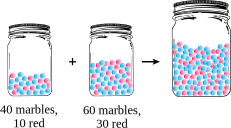
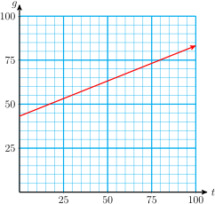

Section 4.4 Problem Solving with Systems
Subsection
In this section we explore some applications of systems of equations. We begin by reviewing some familiar formulas.
Subsection Interest
Recall the formula for calculating interest,
where \(I\) is the interest you will earn after \(t\) years if you invest a principal of \(P\) dollars in an account that earns simple interest at an annual rate \(r\text{.}\)
Caution 4.22.
Notice the difference between interest, \(I\text{,}\) and interest rate, \(r\text{.}\) The interest rate is a percentage, such as 5%. The interest is the amount of money you earn, usually in dollars.
If we make two or more investments at the same time, then the total interest we earn is the sum of the interests earned on each investment separately.
Warm-Up 4.1.
Harvey deposited $1200 in two accounts. He put $700 in a savings account that pays 6% annual interest rate, and the rest in his credit union, which pays 7% annual interest rate. How much will Harvey's investments earn in two years?
Step 1 Calculate the interest earned by each account.
Step 2 Add the earnings from the two investments.
$154
Here is a similar example with variables.
Warm-Up 4.2.
You have $5000 to invest for one year. You want to put part of the money into bonds that pay 7% interest rate and the rest of the money into stocks, which involve some risk but will pay 12% if the investment is successful.
-
Fill in the table.
Amount invested in stocks
Amount invested in bonds
Interest from stocks
Interest from bonds
Total interest
$500 \(\hphantom{0000}\) \(\hphantom{0000}\) \(\hphantom{0000}\) \(\hphantom{0000}\) $1000 \(\hphantom{0000}\) \(\hphantom{0000}\) \(\hphantom{0000}\) \(\hphantom{0000}\) $3200 \(\hphantom{0000}\) \(\hphantom{0000}\) \(\hphantom{0000}\) \(\hphantom{0000}\) $4000 \(\hphantom{0000}\) \(\hphantom{0000}\) \(\hphantom{0000}\) \(\hphantom{0000}\) -
Now suppose you invest \(x\) dollars in the stocks and \(y\) dollars in the bonds.
\begin{gather*} \blert{\text{Sum of amounts invested:}~~~~~~x+y=}\\ \blert{\text{Interest earned on the stocks:}~~~~~~I=Prt=}\\ \blert{\text{Interest earned on the bonds:}~~~~~~I=Prt=} \end{gather*} -
Finally, suppose that you earned a total of $345 in interest from your two investments. Write an equation about this, using your expressions from part (b).
\begin{equation*} \blert{\binom{\text{Total}}{\text{Interest}} = \binom{\text{Interest from}}{\text{stocks}}+\binom{\text{Interest from}}{\text{bonds}}} \end{equation*}
Amount invested in stocks
Amount invested in bonds
Interest from stocks
Interest from bonds
Total interest
$500 $4500 $35 $540 $575 $1000 $4000 $70 $480 $550 $3200 $2800 $224 $216 $440 $4000 $1000 $280 $120 $400 $5000; \(0.07x;~0.12y\)
\(\displaystyle 0.07x+0.12y = 345\)
Reading Questions Reading Questions
1.
What formula do we need for interest problems?
2.
What is the difference between principal and interest?
Principal is the amount invested; interest is the amount earned.
Example 4.23.
Mort invested money in two accounts, a savings plan that pays 8% interest and a mutual fund that pays 7% interest. He put twice as much money in the savings plan as in the mutual fund. At the end of the year Mort's total interest income was $345. How much did he invest in each account?
The unknown quantities are the amounts Mort invested in his two accounts.
Do not confuse the amount Mort invested in each account (the principal) with the amount he earned in interest! A table is a good way to keep these amounts straight.
| \(\hphantom{0000}\) | Principal | Interest Rate | Interest |
| Savings plan | \(x\) | 0.08 | \(0.08x\) |
| Mutual fund | \(y\) | 0.07 | \(0.07y\) |
We must write two equations for the problem, one about the principal and one about the interest.
-
Equation about Principal: From the statement "He put twice as much money in the savings plan as in the mutual fund," we write the equation
\begin{alignat*}{2} \amp\amp\blert{\binom{\small\text{Amount invested}}{\small\text{in savings plan}}} \amp\blert{{}= 2\cdot\binom{\small\text{Amount invested}} {\small\text{in mutual fund}}} \\ \amp\blert{\text{Equation about principal:}}\amp x\qquad\quad~\amp = 2y \end{alignat*} -
Equation about Interest: From the statement "Mort's total interest income was $345," we write the equation
\begin{alignat*}{2} \amp\amp\blert{\binom{\small\text{Interest from}}{\small\text{savings plan}}+\binom{\small\text{Interest from}}{\small\text{mutual fund}}} \amp\blert{{}= \binom{\small\text{Total}}{\small\text{interest}}} \\ \amp\blert{\text{Equation about interest:}}\amp 0.08x~~\quad +\qquad 0.07y\quad~~\amp = 345 \end{alignat*}
This gives us a system of equations.
Because the first equation is already solved for \(x\) in terms of \(y\text{,}\) we'll use the substitution method to solve the system. We substitute \(2y\) for \(x\) in the second equation and solve for \(y\text{.}\)
Finally, we substitute \(y=\alert{1500}\) into the first equation to find
Thus, Mort invested $3000 in the savings plan and $1500 in the mutual fund.
Reading Questions Reading Questions
3.
What were the two equations in Example 4.23 about?
Principal and interest
4.
Which method did we use to solve the system in Example 4.23?
Substitution
Subsection Mixtures
A pharmacist has on hand 20 ounces of a certain drug at 40% strength, but she needs a small quantity of the drug at 75% strength for a prescription. She decides to add a pure form of the drug to the 40% solution. How much should she add to make a mixture of 75% strength?
To solve such problems, we review some properties of percent. We will need the percent formula,
\(P\) stands for the part obtained when we take \(r\) percent of a whole amount, \(W\text{.}\)
Warm-Up 4.3.
You have two jars of marbles. The first contains 40 marbles, of which 10 are red, and the second contains 60 marbles, of which 30 are red.
-
What percent of the marbles in the first jar are red?\(~~~~~~\blert{r=\dfrac{P}{W} = }\)
What percent of the marbles in the second jar are red?\(~~~~~~\blert{r=\dfrac{P}{W} = }\)
You pour both jars of marbles into a larger jar and mix them together.
 -
How many marbles total are in the larger jar?
How many red marbles are in the larger jar?
What percent of marbles in the larger jar are red?\(~~~~~~\blert{r=\dfrac{P}{W} = }\)
Can we add the percents for the first two jars to get the percent red marbles in the mixture?
25%, 50%
100, 40, 40%
No
Caution 4.24.
In Warm-Up 3, you should find that adding the percent of red marbles in the first two jars does not give the percent of red marbles in the mixture. That is,
In general, we cannot add percents unless they are percents of the same whole amount.
Reading Questions Reading Questions
5.
What formula do we need for mixture problems?
6.
When can we add percents?
Only if they are percents of the same whole amount
Warm-Up 4.4.
In a local city council election, your favored candidate, Justine Honest, ran in a small district with two precincts. Ms. Honest won 30% of the 500 votes cast in Precinct 1 and 70% of the 300 votes cast in Precinct 2. Did Candidate Honest win a majority (more than 50%) of the votes in her district?
Step 1 Fill in the first two rows of the table, using information from the problem and the formula \(P=rW\text{.}\)
| \(\hphantom{0000}\) | Total votes (\(W\)) |
Percent for Honest (\(r\)) |
Votes for Honest (\(P\)) |
| Precinct 1 | \(\hphantom{0000}\) | \(\hphantom{0000}\) | \(\hphantom{0000}\) |
| Precinct 2 | \(\hphantom{0000}\) | \(\hphantom{0000}\) | \(\hphantom{0000}\) |
| Entire district | \(\hphantom{0000}\) | \(\hphantom{0000}\) | \(\hphantom{0000}\) |
Step 2 Add down to complete the first and third columns of the table.
Step 3 Fill in the last entry in the table to answer the question in the problem. Use the formula \(P=rW\) again.
No; 45%
So far we have considered mixture problems involving discrete objects, such as marbles or votes. The same methods apply to mixtures of liquids.
Example 4.25.
A chemist wants to produce 45 milliliters of a 40% solution of carbolic acid by mixing a 20% solution with a 50% solution. How many milliliters of each should he use?

We let \(x\) represent the number of milliliters of the 20% solution he needs and \(y\) the number of milliliters of the 50% solution. We use a table to organize the information. The first two columns contain the variables and information given in the problem: the number of milliliters of each solution and its strength as a percent.
| \(\hphantom{0000}\) | Number of Milliliters (\(W\)) |
Percent Acid (\(r\)) |
Amount of Acid (\(P\)) |
| 20% Solution | \(x\) | \(0.20\) | \(\hphantom{0000}\) |
| 50% Solution | \(y\) | \(0.50\) | \(\hphantom{0000}\) |
| Mixture | \(45\) | \(0.40\) | \(\hphantom{0000}\) |
We fill in the last column of the table by using the formula \(P=rW\text{.}\) The entries in this last column give the amount of the important ingredient (in this case, milliliters of acid) in each component solution and in the mixture.
| \(\hphantom{0000}\) | Number of Milliliters (\(W\)) |
Percent Acid (\(r\)) |
Amount of Acid (\(P\)) |
| 20% Solution | \(x\) | \(0.20\) | \(\blert{0.20x}\) |
| 50% Solution | \(y\) | \(0.50\) | \(\blert{0.50y}\) |
| Mixture | \(45\) | \(0.40\) | \(\blert{0.40(45)}\) |
Now we can write two equations about the mixture problem. The first equation is about the total number of milliliters mixed together. The chemist must mix \(x\) milliliters of one solution with \(y\) milliliters of the other solution and end up with 45 milliliters of the mixture, so
The second equation uses the fact that the acid in the mixture can only come from the acid in each of the two original solutions. We used the last column of the table to calculate how much acid was in each component, and we add these quantities to get the amount of acid in the mixture.
These two equation make up a system:
To simplify the system we first multiply the second equation by 100 to clear the decimals.
We solve the system by elimination. Multiply the first equation by \(-20\text{,}\) and add the equations together.
Solving for \(y\text{,}\) we find \(y=30\text{.}\) We substitute \(y=\alert{30}\) into the first equation to find
or \(x=15\text{.}\) The chemist needs 15 milliliters of the 20% solution and 30 milliliters of the 50% solution for the mixture.
Look Closer.
Notice that, in Example 4.25, once we have completed the table, it is easy to write a system of equations; we simply add down the first and third columns of the table. (Remember that we cannot add down the middle column, because percents don't add!)
Reading Questions Reading Questions
7.
What were the two equations in Example 4.25 about?
Total amount of mixture and amount of acid
8.
Which method did we use to solve the system in Example 4.25?
Elimination
Mixture problems are easy to solve if you complete a table first. The rows of the table represent the two components and the final mixture, and the columns are used to calculate the amount of the important ingredient in each. Here is a sample table that you can customize for the specifics of a particular problem.
| \(\hphantom{0000}\) | Total Amount (\(W\)) |
Percent of Important Ingredient (\(r\)) |
Amount of Important Ingredient (\(P\)) |
| First Component | \(\hphantom{0000}\) | \(\hphantom{0000}\) | \(\hphantom{0000}\) |
| Second Component | \(\hphantom{0000}\) | \(\hphantom{0000}\) | \(\hphantom{0000}\) |
| Mixture | \(\hphantom{0000}\) | \(\hphantom{0000}\) | \(\hphantom{0000}\) |
Subsection Motion
We can also use systems of equations to solve problems involving motion at a constant speed. We'll need the formula \(\blert{D=RT}\text{.}\)
Example 4.26.
Geologists can calculate the distance from their seismograph to the epicenter of an earthquake by timing the arrival of the P and S waves. They know that P waves travel at about 5.4 miles per second and S waves travel at 3.0 miles per second. If the P waves arrived 3 minutes before the S waves, how far away is the epicenter of the quake?
Let \(x\) represent the distance from the seismograph to the epicenter. The time it took for the waves to arrive is also unknown, so we'll let \(y\) be the travel time for the P waves, in seconds. The travel time for the S waves is then \(y+180\) seconds.
We organize all this information in a table.
| \(\hphantom{0000}\) | Rate | Time | Distance |
| P waves | \(5.4\) | \(y\) | \(x\) |
| S waves | \(3.0\) | \(y+180\) | \(x\) |
We can now write two equations about the problem, one for the P waves and one for the S waves, using the formula \(RT=D\text{.}\)
We solve the system by substitution. We substitute \(\alert{5.4y}\) for \(x\) in the second equation, and then solve for \(y\text{.}\)
Thus, it took the P waves 225 seconds to arrive at the seismograph. To solve for the distance \(x\text{,}\) we substitute \(y=\alert{225}\) into the first equation to find
The epicenter is located 1215 miles from the seismograph.
Reading Questions Reading Questions
9.
What formula do we need for motion problems?
10.
What did \(x\) and \(y\) represent in In Example 4.26?
\(x\) represented the distance from the seismograph to the epicenter, and \(y\) represented the travel time for the P waves
Subsection Skills Warm-Up
Exercises Exercises
Exercise Group.
For part (b) of each problem, write an algebraic expression in two variables.
1.
How much interest will you earn in 1 year if you invest $2400 in a T-bill that pays 7% interest and $800 in a savings account that pays 4.8% interest?
How much will you earn if you invest \(x\) dollars in the T-bill and \(y\) dollars in the savings account?
2.
How far will you travel if you jog for 40 minutes at 9 miles per hour, and then jog for 30 minutes at 5 miles per hour?
How far will you travel if you jog for 40 minutes at \(x\) miles per hour, and the jog for 30 minutes at \(y\) miles per hour?
3.
How long will it take you to drive 180 miles on the highway at an average speed of 60 miles per hour, and then 30 miles on a gravel road at an average speed of 40 miles per hour?
How long will it take you if you drive on the highway at \(x\) miles per hour and on the gravel road at \(y\) miles per hour?
4.
How much nitrogen is in a mixture of 10 pounds of fertilizer that is 6% nitrogen and 4 pounds of fertilizer that is 60% nitrogen?
How much nitrogen is in a mixture of \(x\) pounds of the first fertilizer and \(y\) pounds of the second fertilizer?
Subsubsection Answers to Skills Warm-Up
$218.40
\(\displaystyle 0.075x+0.048y\)
8.5 miles
\(\displaystyle \dfrac{2}{3}x +\dfrac{1}{2}y\)
3.75 hours
\(\displaystyle \dfrac{180}{x} + \dfrac{30}{y}\)
3 lbs
\(\displaystyle 0.06x+0.60y\)
Subsection Lesson
Subsubsection Activity 1: Interest
Jerry invested $2000, part at 4% interest and the remainder at 9%. His yearly income from the 9% investment is $37 more than his income from the 4% investment. How much did he invest at each rate?
-
Choose variables for the unknown quantities.
Fill in the table.
\(\hphantom{0000}\) Principal Interest Rate Interest First investment \(\hphantom{0000}\) \(\hphantom{0000}\) \(\hphantom{0000}\) Second investment \(\hphantom{0000}\) \(\hphantom{0000}\) \(\hphantom{0000}\) -
Write two equations; one about the principal, and one about the interest.
\(\blert{\text{Principal:}}\)
\(\blert{\text{Interest:}}\)
Solve the system. (Which method seems easiest?)
Write your answer to the question in the problem in a sentence.
Subsubsection Activity 2: Mixtures
Polls conducted by Senator Quagmire's campaign manager show that he can win 60% of the rural vote in his state but only 45% of the urban vote. If 1,200,000 citizens vote, how many voters from rural areas and how many from urban areas must vote in order for the Senator to win 50% of the votes?
-
Let \(x\) represent the number of rural voters and \(y\) the number of urban voters. Fill in the table.
\(\hphantom{0000}\) Number of Voters \((W)\) Percent for Quagmire \((r)\) Number for Quagmire \((P)\) Rural \(\hphantom{0000}\) \(\hphantom{0000}\) \(\hphantom{0000}\) Urban \(\hphantom{0000}\) \(\hphantom{0000}\) \(\hphantom{0000}\) Total \(\hphantom{0000}\) \(\hphantom{0000}\) \(\hphantom{0000}\) -
Add down the first and third columns to write a system of equations.
\(\blert{\text{Number of voters:}}\)
\(\blert{\text{Number for Quagmire:}}\)
Solve the system.
Write your answer to the question in the problem in a sentence.
Subsubsection Activity 2: Motion
A river steamer requires 3 hours to travel 24 miles upstream and 2 hours for the return trip downstream. Find the speed of the current and the speed of the steamer in still water.
-
Choose variables:
Speed of the steamer:
Speed of the current:
Fill in the table about the steamer. Hint: When you are traveling downstream, the current adds to the speed of the boat. When you are traveling upstream, the current subtracts from the speed of the boat.
\(\hphantom{0000}\) Rate Time Distance Upstream \(\hphantom{0000}\) \(\hphantom{0000}\) \(\hphantom{0000}\) Downstream \(\hphantom{0000}\) \(\hphantom{0000}\) \(\hphantom{0000}\) Write two equations about the steamer.
Solve the system.
Write your answer to the question in the problem in a sentence.
Subsubsection Wrap-Up
Objectives.
In this Lesson we practiced the following skills:
Using a system to solve problems about interest
Using a system to solve problems about mixtures
Using a system to solve problems about motion
Questions.
In Activity 1, is $2000 part of the equation about the principal or the equation about the interest?
In Activity 2, what did \(x\) and \(y\) represent?
In Activity 3, what did \(x+y\) and \(x-y\) represent?
Subsection Homework Preview
Exercises Exercises
Exercise Group.
State the unknown quantities in each problem.
Write a system of equations for the problem.
1.
Mischa invested $2000 in two accounts: a CD that earns 4% interest, and a savings account that earns 2.5% interest. At the end of the year, he had earned $72.50 in interest. How much did he invest in each account?
2.
Bran flakes cost $1.40 per cup, and raisins cost $2.20 per cup. A 3-cup box of raisin bran costs $4.60. How many cups of raisins and how many cups of bran flakes are in the box?
3.
EnergyBurst powdered lemonade is 50% sugar by weight. LemonLite is 20% sugar. How much of each powder should you use to make 12 ounces of a mixture that is 30% sugar?
4.
Jada and Charee participate in Walk for the Cure. Jada walks at 4 miles per hour, and Charee jogs at 6 miles per hour. It takes Jada \(2\frac{1}{2}\) hours longer than Charee to complete the course. How long is the course?
Subsubsection Answers to Homework Preview
\(\displaystyle \begin{aligned}[t] x+y \amp =2000\\ 0.04x+0.025y \amp = 72.50 \end{aligned}\)
\(\displaystyle \begin{aligned}[t] x+y \amp =3\\ 1.4x+2.2y \amp = 4.6 \end{aligned}\)
\(\displaystyle \begin{aligned}[t] x+y \amp =12\\ 0.5x+0.2y \amp =0.3(12) \end{aligned}\)
\(\displaystyle \begin{aligned}[t] 4x \amp =6y\\ x \amp =y+2.5 \end{aligned}\)
Exercises Homework 4.4
Exercise Group.
Use systems to solve Problems 1–3 about interest.
1.
Goodlife Insurance Company has $150,000 in fees from its clients to invest. They deposited part of the money into bonds that pay 6.5% annual interest and the rest into a mutual fund that pays 11.8% annual interest.
Assign variables to the amount of money Goodlife deposited into each account, and write an equation about the sum of the deposits.
Write expressions for the interest earned on each account after 1 year.
Goodlife earned $12,930 interest in 1 year. Write an equation about that.
Solve your system of equations to find out how much Goodlife invested in each account.
2.
Mario borrowed $30,000 from two banks to open a print shop. The first loan charges 12% annual interest, and the second charges 15% interest. Mario's annual interest payment on both loans together is $3750. How much did he borrow at each rate?
Assign variables to the unknown quantities and make a table like the one in Example 4.23.
Write two equations for the problem, one about the principals and one about the interests.
Solve your system and answer the question in the problem.
3.
Stefan borrowed twice as much on his 7% car loan as on his 4% student loan. The annual interest on the car loan is $500 more than the interest on the student loan. How much did Stefan borrow on each loan?
Exercise Group.
Solve Problems 4–5 about mixtures. (No variables are needed!)
4.
The chemistry department has 80 students, of whom 35% are women. The physics department has 60 students, of whom 15% are women.
| \(\hphantom{0000}\) | Number of Students (\(W\)) |
Percent Women (\(r\)) |
Number of Women (\(P\)) |
| Chemistry | \(\hphantom{0000}\) | \(\hphantom{0000}\) | \(\hphantom{0000}\) |
| Physics | \(\hphantom{0000}\) | \(\hphantom{0000}\) | \(\hphantom{0000}\) |
| Total | \(\hphantom{0000}\) | \(\hphantom{0000}\) | \(\hphantom{0000}\) |
How many chemistry students are women? How many physics students are women?
How many students are there in both departments? How many of them are women?
What percent of the students in chemistry and physics are women?
5.
Pipette, a French chemistry student, has 30 milliliters of a 50% solution of acid. She wants to reduce the strength by adding 12 milliliters of a 15% solution of the same acid.
| \(\hphantom{0000}\) | Number of Milliliters (\(W\)) |
Percent Acid (\(r\)) |
Amount of Acid (\(P\)) |
| 50% Solution | \(\hphantom{0000}\) | \(\hphantom{0000}\) | \(\hphantom{0000}\) |
| 15% Solution | \(\hphantom{0000}\) | \(\hphantom{0000}\) | \(\hphantom{0000}\) |
| Mixture | \(\hphantom{0000}\) | \(\hphantom{0000}\) | \(\hphantom{0000}\) |
How much acid is in the 30 milliliters of 50% solution? How much acid is in the 12 milliliters of 15% solution?
How much acid is in the mixture? How many milliliters of the mixture are there?
What percent of the mixture is acid?
Fill in the table with your answers to parts (a)-(c).
Exercise Group.
Use systems to solve Problems 6–7 about mixtures.
6.
A pet store owner wants to mix a 12% saltwater solution and a 30% saltwater solution to obtain 45 liters of a 24% solution. How many liters of each ingredient does he need?
Choose variables and make a table for the problem.
Use your table to write two equations about the mixture.
Solve your system and answer the question in the problem.
7.
A newspaper poll of 400 people stated that 58% were in favor of a recycling program. It also said that 50% of the men and 70% of the women polled favored the program. How many women were polled?
Exercise Group.
Solve Problems 8–9 about motion.
8.
Delbert and Francine leave Cedar Rapids at the same time and drive in opposite directions for 6 hours.
-
Choose variables for Delbert and Francine's speeds and fill in the table.
\(\hphantom{0000}\) Rate Time Distance Delbert \(\hphantom{0000}\) \(\hphantom{0000}\) \(\hphantom{0000}\) Francine \(\hphantom{0000}\) \(\hphantom{0000}\) \(\hphantom{0000}\) Make a sketch showing Cedar Rapids, Delbert, and Francine. Label your sketch with the distance that each traveled.
Francine drove 5 miles per hour slower than Delbert. After 6 hours, they are 570 miles apart. Write two equations about the problem.
Solve your system to find Delbert's and Francine's speeds.
9.
Bonnie left Dallas and drove north at 40 miles per hour. Three hours later Clyde headed north form Dallas on the same road at 70 miles per hour until he caught up with Bonnie.
Make a sketch showing Dallas, Bonnie, and Clyde.
-
Complete the table.
\(\hphantom{0000}\) Rate Time Distance Bonnie \(\hphantom{0000}\) \(t\) \(d\) Clyde \(\hphantom{0000}\) \(\hphantom{0000}\) \(\hphantom{0000}\) Use your table to write two equations about the problem.
Solve your system. How long did Bonnie drive before Clyde caught up? How far had she driven?
Exercise Group.
Use systems to solve Problems 10–11.
10.
A yacht leaves San Diego and heads south, traveling at 25 miles per hour. Six hours later a Coast Guard cutter leaves San Diego traveling at 40 miles per hour and pursues the yacht. How long will it take the cutter to catch the yacht? How far will they have traveled?
11.
Byron and Ada conduct sight-seeing tours of New England by bicycle. Byron leads the tour group at an average speed of 10 miles per hour, while Ada goes ahead at a speed of 12 miles per hour to prepare lunch. Ada arrives at the lunch stop 40 minutes (\(\dfrac{2}{3}\) of an hour) before the tour group. How far did the tour bicycle that morning?
Exercise Group.
Solve by writing a single equation in two variables.
12.
In Julio's history class, the final grade is computed by adding 60% of the test average to 40% of the term paper grade. Julio's test average is 72.
Write an equation for Julio's final grade, \(g\text{,}\) in terms of his term paper grade, \(t\text{.}\)
What will Julio's final grade be if he earns a grade of 65 on the term paper? What if he earns a grade of 80?
-
Use the graph below to estimate what grade Julio must make on the term paper in order to earn afinal grade of 80 in the class.
 Use your equation from part (a) to verify your answer algebraically.